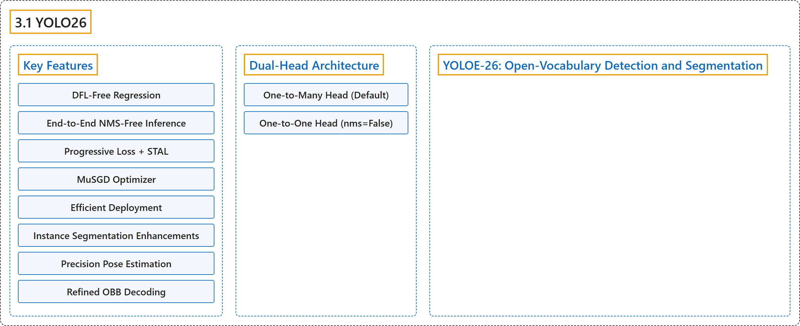

3.1 YOLO26
Classification

Glossary
| Term | Definition | 中文翻译 | Source |
|---|---|---|---|
| 3.1 YOLO26 YOLO26 |
"YOLO26 is a unified family of real-time vision models described in the Ultralytics YOLO26 paper." | YOLO26 是 Ultralytics YOLO26 论文中描述的一个统一的实时视觉模型家族。 | Ultralytics, n.d., "Ultralytics YOLO26", para. 1 |
| Key Features 主要特性 |
(No definition) | （无定义） | Ultralytics, n.d., "Key Features" |
| DFL-Free Regression 无 DFL 回归 |
"DFL-Free Regression YOLO26 removes Distribution Focal Loss (DFL), reducing detection-head complexity and simplifying export." | 无 DFL 回归：YOLO26 移除了分布焦点损失（DFL），降低了检测头的复杂度并简化了导出。 | Ultralytics, n.d., "Key Features", item 1 |
| End-to-End NMS-Free Inference 端到端免 NMS 推理 |
"End-to-End NMS-Free Inference YOLO26 supports native end-to-end inference with nms=False, producing predictions without a separate NMS pass." |
端到端免 NMS 推理：YOLO26 支持用 nms=False 做原生端到端推理，无需单独的 NMS 步骤即可产生预测。 |
Ultralytics, n.d., "Key Features", item 2 |
| Progressive Loss + STAL 渐进式损失 + STAL |
"Progressive Loss + STAL Progressive Loss shifts training emphasis toward the inference-time head, while STAL improves positive label coverage for small objects." | 渐进式损失 + STAL：渐进式损失把训练重心移向推理时使用的检测头，而 STAL 提高小目标的正样本标签覆盖率。 | Ultralytics, n.d., "Key Features", item 3 |
| MuSGD Optimizer MuSGD 优化器 |
"MuSGD Optimizer A hybrid optimizer that combines SGD with Muon, adapting optimization ideas from large language model training to computer vision." | MuSGD 优化器是一种把 SGD 与 Muon 结合起来的混合优化器，把大语言模型训练中的优化思想移用到计算机视觉。 | Ultralytics, n.d., "Key Features", item 4 |
| Efficient Deployment 高效部署 |
"Efficient Deployment The simplified head and optional NMS-free path reduce inference overhead across export targets and hardware profiles" | 高效部署：简化的检测头和可选的免 NMS 路径降低了各种导出目标和硬件配置上的推理开销 | Ultralytics, n.d., "Key Features", item 5 |
| Instance Segmentation Enhancements 实例分割增强 |
"Instance Segmentation Enhancements Introduces semantic segmentation loss to improve model convergence and an upgraded proto module that leverages multi-scale information for superior mask quality." | 实例分割增强：引入语义分割损失以改善模型收敛，以及一个利用多尺度信息、提升掩码质量的升级版 proto 模块。 | Ultralytics, n.d., "Key Features", item 6 |
| Precision Pose Estimation 精确姿态估计 |
"Precision Pose Estimation Integrates Residual Log-Likelihood Estimation (RLE) for more accurate keypoint localization and optimizes the decoding process for increased inference speed." | 精确姿态估计：集成残差对数似然估计（RLE），使关键点定位更准确，并优化解码过程以提高推理速度。 | Ultralytics, n.d., "Key Features", item 7 |
| Refined OBB Decoding 改进的 OBB 解码 |
"Refined OBB Decoding Introduces a specialized angle loss to improve detection accuracy for square-shaped objects and optimizes OBB decoding to resolve boundary discontinuity issues." | 改进的 OBB 解码：引入专门的角度损失，提高方形物体的检测精度，并优化 OBB 解码以解决边界不连续问题。 | Ultralytics, n.d., "Key Features", item 8 |
| Dual-Head Architecture 双头架构 |
"YOLO26 detection models use a dual-head architecture that provides flexibility for different deployment scenarios:" | YOLO26 检测模型采用双头架构，它为不同的部署场景提供灵活性： | Ultralytics, n.d., "Usage Examples", Dual-Head Architecture, para. 1 |
| One-to-Many Head (Default) 一对多检测头（默认） |
"One-to-Many Head (Default): Generates traditional YOLO outputs requiring NMS post-processing, outputting (N, nc + 4, 8400) where nc is the number of classes." |
一对多检测头（默认）会生成需要 NMS 后处理的传统 YOLO 输出，输出形状为 (N, nc + 4, 8400)，其中 nc 是类别数。 |
Ultralytics, n.d., "Usage Examples", Dual-Head Architecture, item 1 |
| One-to-One Head (nms=False) 一对一检测头（nms=False） |
"One-to-One Head (nms=False): Produces end-to-end predictions without NMS, outputting (N, 300, 6) with a maximum of 300 detections per image." |
一对一检测头（nms=False）会不经 NMS 直接产生端到端预测，输出形状为 (N, 300, 6)，每张图像最多 300 个检测结果。 |
Ultralytics, n.d., "Usage Examples", Dual-Head Architecture, item 2 |
| YOLOE-26: Open-Vocabulary Detection and Segmentation YOLOE-26：开放词汇检测与分割 |
"YOLO26 also powers YOLOE-26, an open-vocabulary variant that detects and segments object categories from text prompts, visual prompts, or a prompt-free mode instead of a fixed class list learned at training time." | YOLO26 还支撑着 YOLOE-26，它是一个开放词汇变体，它根据文本提示、视觉提示或无提示模式来检测和分割物体类别，而不是使用训练时学到的固定类别列表。 | Ultralytics, n.d., "YOLOE-26: Open-Vocabulary Detection and Segmentation", para. 1 |
References
Ultralytics. (n.d.). Ultralytics YOLO26. Ultralytics YOLO Docs (ultralytics 8.4.194). Retrieved October 31, 2026, from https://docs.ultralytics.com/models/yolo26/